₺₺₺₺
Otel Restoranı
Sultanahmet 360 Panorama Restaurant (Dada Gourmet'te yeni sekmede açılır)
The And Hotel’in terasındaki Sultanahmet 360 Panorama, Ayasofya çevresine bakan bir yemek noktası.
Fatih / İstanbul
Dada Gourmet mekanlarını şehre, mutfağa ve beslenme seçeneklerine göre süz; seçtiğin mekanın detayını Dada Gourmet'te aç.
The And Hotel’in terasındaki Sultanahmet 360 Panorama, Ayasofya çevresine bakan bir yemek noktası.
Zeugma Terrace, Sultanahmet’te et yemeklerini tarihî yarımadaya bakan bir terasta sunuyor.
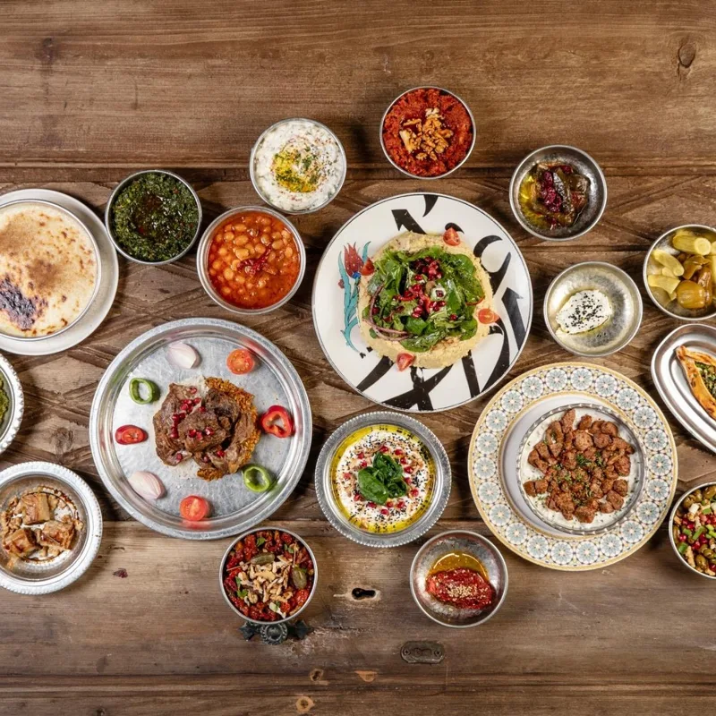
₺₺₺₺Sultanahmet’teki Galeyan, Anadolu yemeklerini tarihî yarımadanın merkezinde çağdaş sunumlarla buluşturuyor.
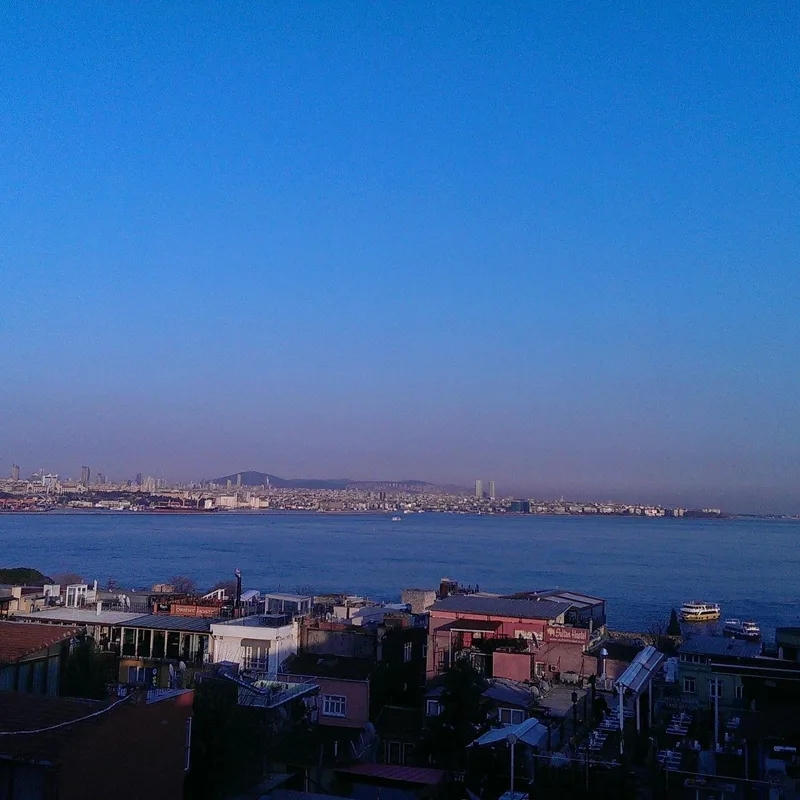
₺₺₺₺Sultanahmet Ottoman Fish Terrace House, Alemdar’daki terasında balık ve deniz ürünlerine odaklanıyor.
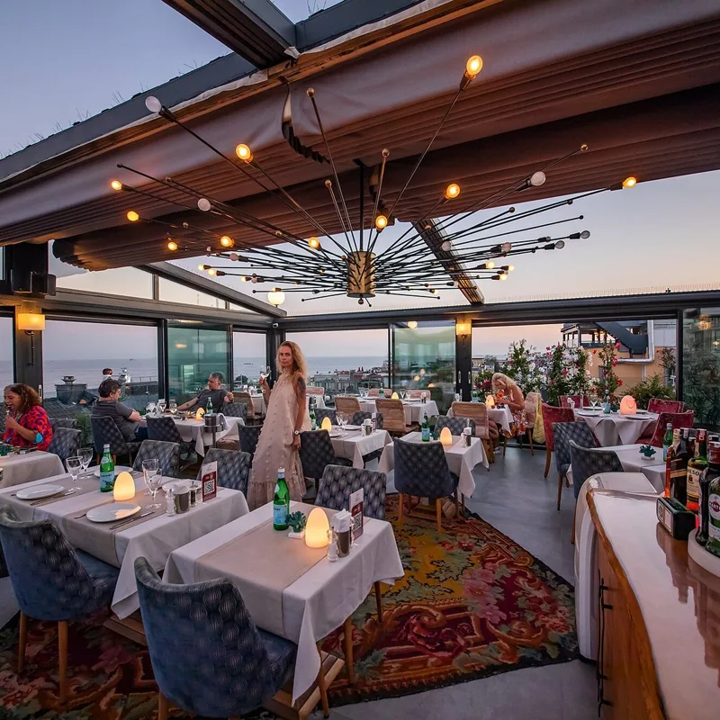
₺₺₺₺Tria Terrace, Cankurtaran’da deniz ürünlerini ve Akdeniz yemeklerini teras ortamında sunuyor.
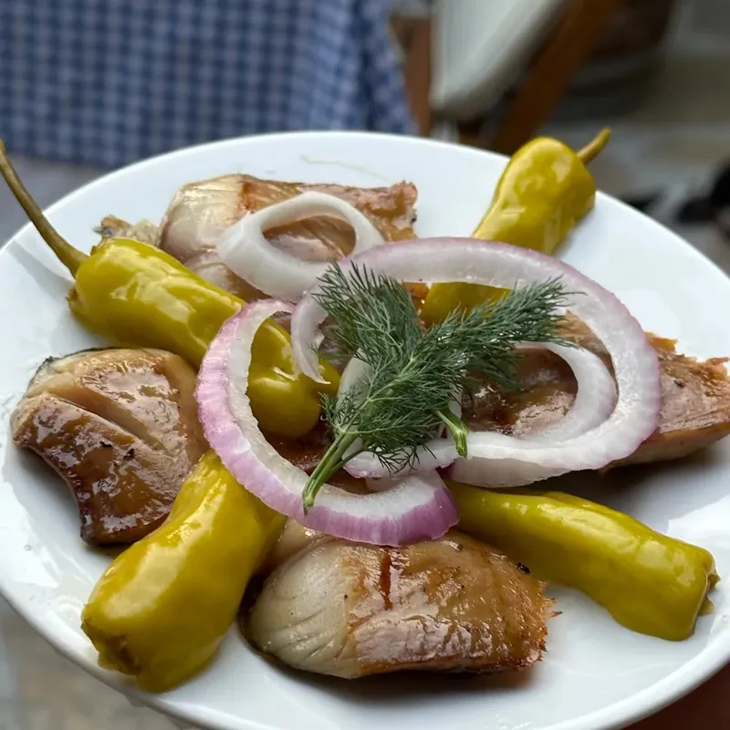
₺₺₺₺Cankurtaran’daki Giritli, Ege mezelerini ve deniz ürünlerini tarihi yarımadada sunuyor.
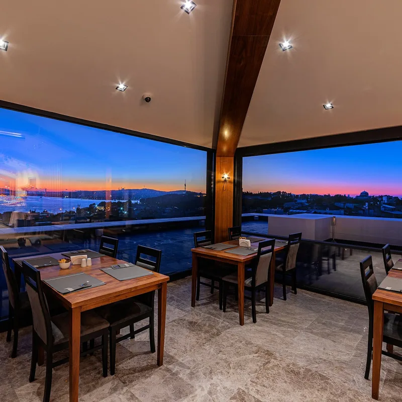
₺₺₺₺Demiray Hotel’in üst katındaki Eva Bosphorus, Boğaz manzarasıyla Türk ve İtalyan yemekleri sunuyor.
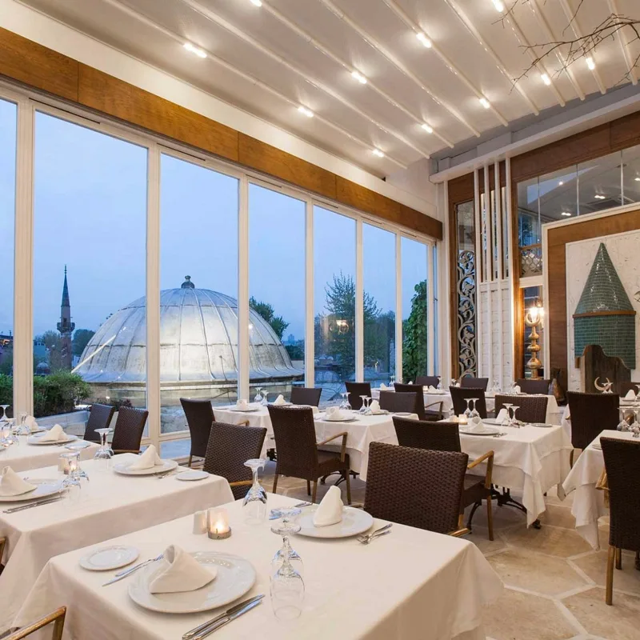
₺₺₺₺Matbah, Sultanahmet’te Osmanlı saray mutfağından yemekleri tarihî çevreye yakın bir salonda sunuyor.
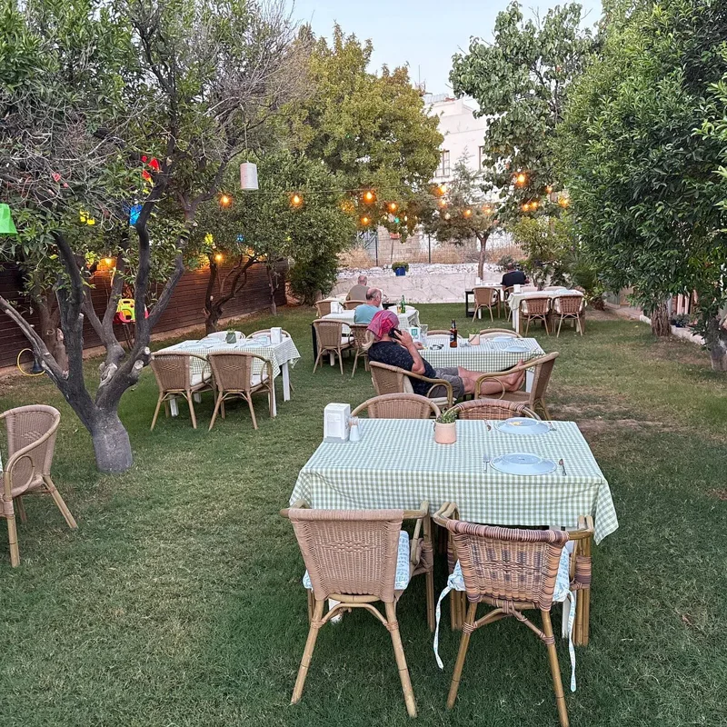
₺₺₺₺Bodrum Umurca’daki Curly’s Demeter, bahçeli ortamında et yemekleri ve deniz ürünleri sunuyor.
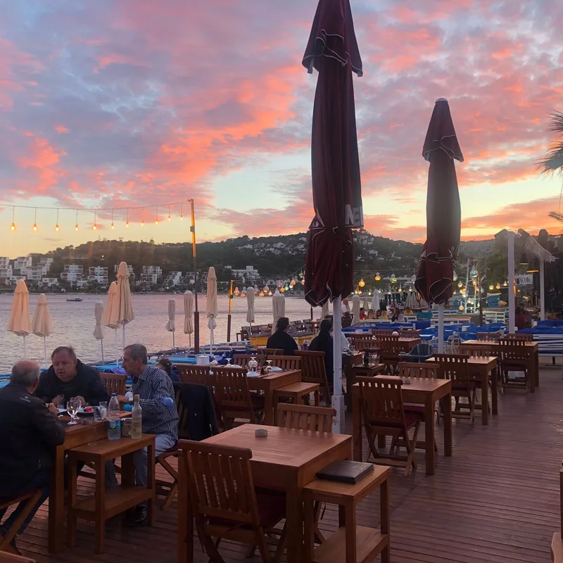
₺₺₺₺Bitez kıyısındaki Almera, deniz ürünleri ve Akdeniz yemeklerini sahil masalarında sunuyor.
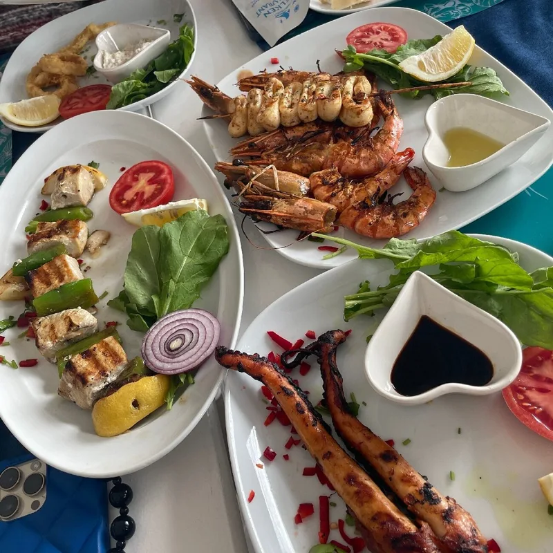
₺₺₺₺Kaş’taki Yelken Restaurant & Meyhane, deniz kıyısında meze ve balık sofrası kuruyor.
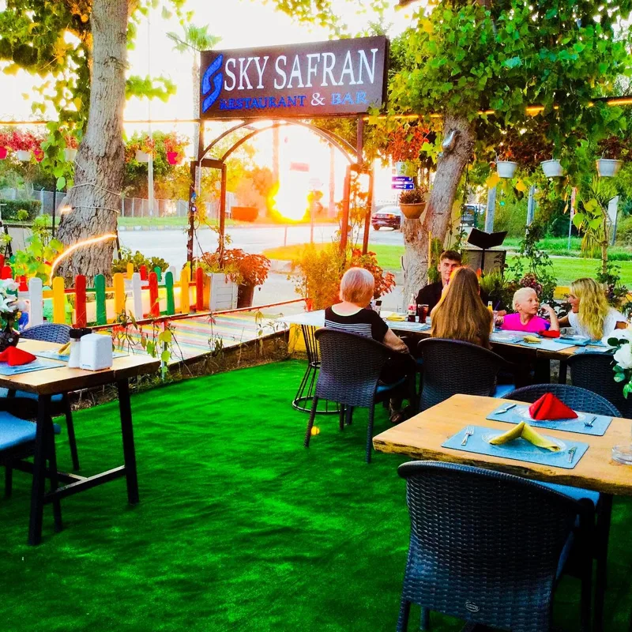
₺₺₺₺Side’deki Sky Safran, bahçe masalarında kahvaltıdan geç saat yemeğine uzanan geniş bir menü sunuyor.
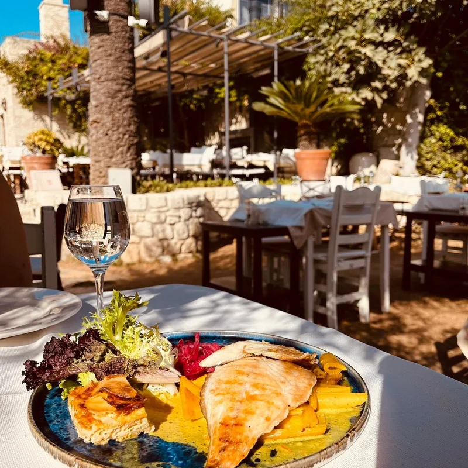
₺₺₺₺Alaçatı’daki Fava, eski bir Rum evinin avlusunda Ege mezeleri ve deniz ürünlerini buluşturuyor.
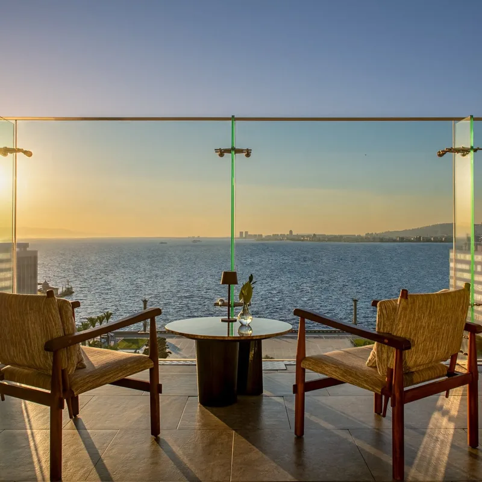
₺₺₺₺Swissôtel Büyük Efes’in terasındaki Scappi, İtalyan yemeklerini İzmir manzarasıyla sunuyor.
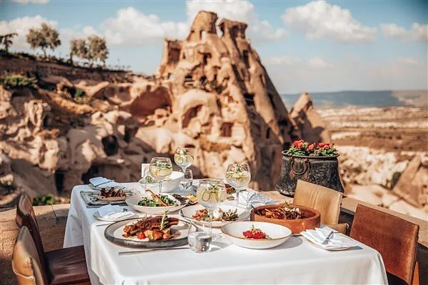
₺₺₺₺Argos in Cappadocia içindeki Seki, Uçhisar manzarası eşliğinde Anadolu lezzetlerini çağdaş dokunuşlarla sunuyor.
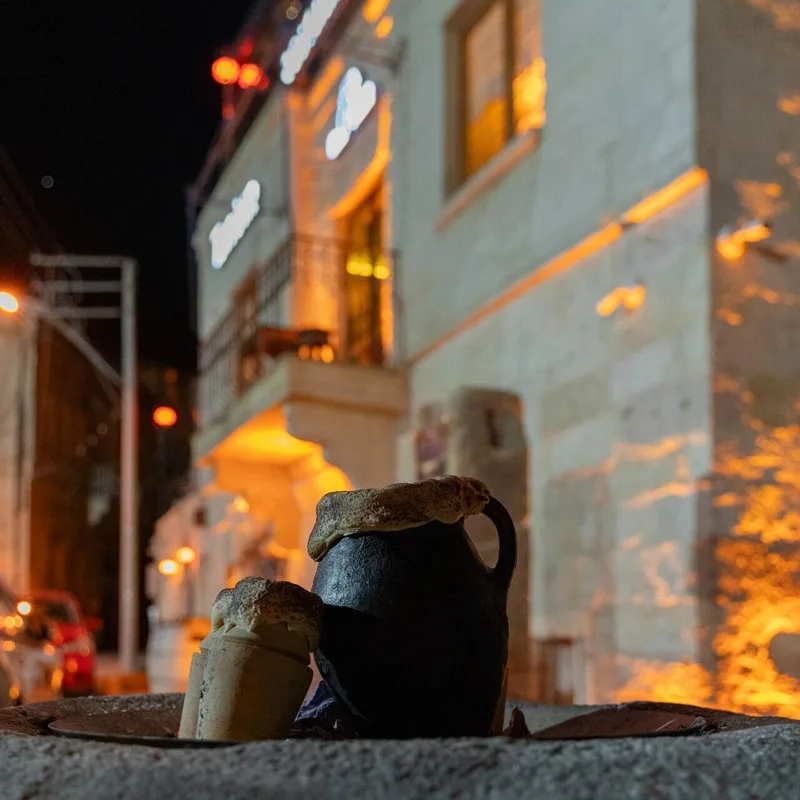
₺₺₺₺Ürgüp’teki Tandır House, Türk ve Akdeniz yemeklerini taş mekân ve teras atmosferiyle birleştiriyor.
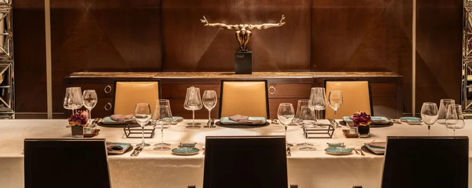
₺₺₺₺Lugal Ankara’nın Aruni restoranı, yerel malzemeleri çağdaş Türk mutfağı yorumuyla kış bahçesi ve terasında sunuyor.
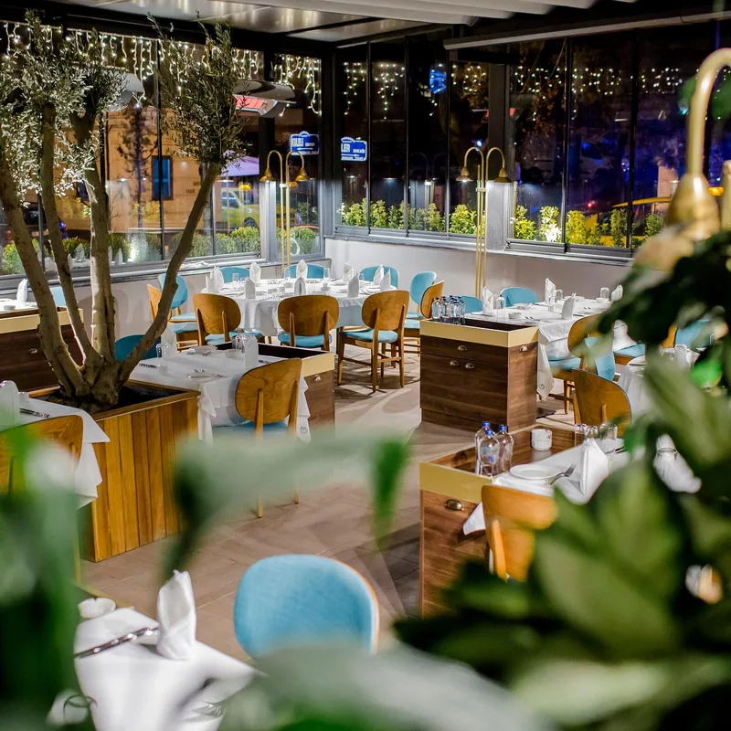
₺₺₺₺Ankara’daki Trilye, mevsimlik balık ve deniz ürünleri için Kuleli Sokak’ta köklü bir adres.
Seçimlerini azaltmayı dene ya da seçili filtreleri temizle.
Mekan bilgileri ve görseller Dada Gourmet'ten gelir. Görüntülenme sayısı prototip örneğidir: Dada Gourmet'te 7 Kasım 2026'da görünen değerdir. Henüz değerlendirme almamış mekanda puan gösterilmez. Bu önizlemede Dada Gourmet'teki 203 mekandan 18 tanesi listelenir, süzgeç sayıları bu kartları sayar.
Bu sayfa genel bilgilendirme amaçlıdır; tıbbi teşhis veya tedavi yerine geçmez. Alerjin ya da klinik bir durumun varsa siparişten önce mekana danış.
Bu sayfadaki içerik genel bilgilendirme amaçlıdır; tıbbi teşhis veya tedavi yerine geçmez. Kişiye özel beslenme planı yalnızca yetkili bir diyetisyen tarafından hazırlanır. Gebelik, kronik hastalık, düzenli ilaç kullanımı, çocuk beslenmesi veya klinik bir durum varsa plana başlamadan önce hekim ve diyetisyen kontrolü zorunludur.